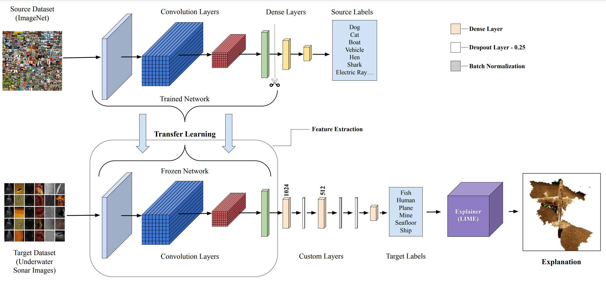

Train underwater SONAR image classification models and generate explanations using LIME-based Explainable Artificial Intelligence
Powerful, flexible, and explainable underwater SONAR image classification
Leverage pre-trained state-of-the-art CNN models (VGG, ResNet, Inception, etc.) for robust underwater SONAR image classification.
Generate visual explanations using LIME and SP-LIME to understand model predictions and build trust in critical applications.
Customizable training pipeline with support for multiple optimizers, learning rates, batch sizes, and early stopping.
Built-in data augmentation to improve model generalization and prevent overfitting on limited sonar datasets.
Evaluate models with confusion matrices, classification reports, and detailed performance metrics.
Simple API for making predictions on new sonar images with or without explanations.
System architecture for underwater SONAR image classification with XAI

The pipeline consists of data loading with optional augmentation, transfer learning-based model training using pre-trained CNN architectures, and inference with optional LIME/SP-LIME explanations for model interpretability.
Choose from a wide range of pre-trained CNN architectures
VGG16
VGG19
ResNet50
ResNet101
InceptionV3
DenseNet121
DenseNet201
MobileNetV2
Xception
InceptionResNetV2
NASNetLarge
NASNetMobile
EfficientNetB0
EfficientNetB7
Everything you need to get started
Set up your development environment and install required packages.
Learn about the expected dataset format and organization.
Train classification models using transfer learning.
Evaluate trained models with comprehensive metrics.
Make predictions on new sonar images.
Generate LIME and SP-LIME explanations for predictions.
Get started with underwater SONAR classification in minutes
# Clone the repository
git clone https://github.com/Purushothaman-natarajan/Under-water-sonar-image-classification.git
cd Under-water-sonar-image-classification
# Install dependencies
pip install -r requirements.txt
# Process and prepare dataset
python data_loader.py --path ./data --target_folder ./processed_data --dim 224 --batch_size 32 --num_workers 4 --augment_data
# Train with VGG16
python train.py --base_models VGG16 --shape 224 224 3 --data_path ./processed_data --log_dir ./logs --model_dir ./models --epochs 100 --optimizer adam --learning_rate 0.001 --batch_size 32 --patience 10
# Train with multiple models
python train.py --base_models VGG16 ResNet50 --shape 224 224 3 --data_path ./processed_data --log_dir ./logs --model_dir ./models --epochs 100
# Test trained model
python test.py --model_path ./models/vgg16_model.keras --test_dir ./test_data --train_dir ./processed_data/train --log_dir ./logs
# Predict on new image
python predict.py --model_path ./models/vgg16_model.keras --img_path ./test_image.jpg --train_dir ./processed_data/train
--path, --target_folder, --dim, --batch_size, --num_workers, --augment_data
--base_models, --shape, --data_path, --log_dir, --model_dir, --epochs, --optimizer, --learning_rate, --batch_size, --patience
--model_path, --test_dir, --train_dir, --log_dir
Generate visual explanations for model predictions using LIME
Local Interpretable Model-agnostic Explanations (LIME) generates local explanations by perturbing the input image and observing how the prediction changes. It identifies the most important regions for the model's decision.
Sub-Modular Picks LIME selects a representative subset of explanations that cover different image regions while avoiding redundancy, providing a more comprehensive view of model behavior.
# Generate LIME explanation
python predict_and_explain.py --image_path ./test_image.jpg --model_path ./models/vgg16_model.keras --train_directory ./processed_data/train --explanation_method lime --num_samples 100 --num_features 10
# Generate SP-LIME explanation
python predict_and_explain.py --image_path ./test_image.jpg --model_path ./models/vgg16_model.keras --train_directory ./processed_data/train --explanation_method splime --num_samples 100 --num_features 10 --segmentation_alg quickshift
--image_path, --model_path, --train_directory, --explanation_method
--num_samples (default: 100), --num_features (default: 10), --segmentation_alg (default: quickshift), --kernel_size (default: 2), --max_dist (default: 200), --ratio (default: 0.1)
If you use this project in your research, please cite our paper
@article{natarajan2024underwater,
title={Underwater SONAR Image Classification and Analysis using LIME-based Explainable Artificial Intelligence},
author={Natarajan, Purushothaman and Nambiar, Athira},
journal={arXiv preprint arXiv:2408.12837},
year={2024}
}